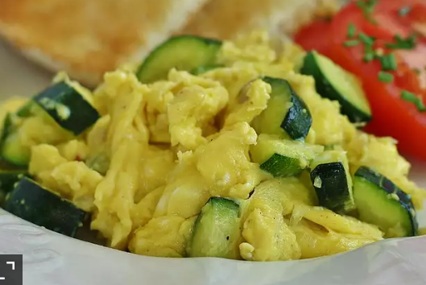

Zucchini

A very healthy breakfast.
Ingredients
- 1 ½ tablespoons olive oil
- 2 large zucchini, cut into large chunks
- salt and ground black pepper to taste
- 2 large eggs
- 1 teaspoon water, or as desired
STEPS
- Heat oil in a skillet over medium-high heat; saute zucchini until tender,
about 10 minutes.
Season zucchini with salt and black pepper.
- Beat eggs with a fork in a bowl; add water and beat until evenly combined.
Pour eggs over zucchini; cook and stir until eggs are scrambled and no longer runny, about 5 minutes.
Season zucchini and eggs with salt and black pepper.